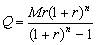

按揭計算
程式新版編寫日期: 2006年8月23日
程式用作計算按揭問題，假定利息每月計算及息率固定不變，程式可以計算以下問題:
˙每月供款Monthly instalments (已知貸款、年利率及還款期數(月為單位))。
˙貸款 Loan (已知每月供款、年利率及還款期數)
˙年利率 (已知每月供款、貸款 及還款期數) (只適用於第二個程式)
˙還款期數 (已知每月供款、貸款及年利率)
參考公式:

(Q為每月供款，M為貨款及 r 為每月利率 (即年利率÷12))
第一個程式 (78 bytes)
Mem clear: 1200→X: ?→A: ?→B: ?→C: ?→D:
1 + C÷X→Y: D=0 => (log A - log(A - BC÷X) ) ÷
log Y◢ Y^D: CAns ÷ X(Ans - 1→Y:
B => BY◢ A ÷ Y
註: 計算按揭問題的年利率需要使用近以值求根的方法，由於超出會考課程的範圍，所以第一個程式省略了這個功能，若果需要計算年利率，請使用第二個程式。
注意: 10x是按shift log。
第二個程式 (132 bytes)
Mem clear: 1200→X: ?→A: ?→B: ?→C: ?→D:
1 + C÷X→Y:
D=0 => (log A - log(A - BC÷X) ) ÷ log Y◢
C => CY^D ÷ X(Y^D - 1→Y: A=0 => BY◢ C => A ÷ Y◢
6M+: Lbl 0: (1 + M÷X)^D: (Ans - 1)XA ÷ Ans B→Y:
YM-: M2 ≧ 10x - 6 => Y→M => Goto 0: Y
例題1: 貸款$100,0000，年利率為6%，貸款時間為360月，求每月還款額。
按 Prog 1 再按 EXE (不輸入數值代表計算每月還款額)
100 0000 EXE (貸款)
6 EXE (年利率)
360 EXE (還款期，顯示還款額為 $5995.51)
例題2: 一項貸款，每月還款額為$5995.51，年利率為6%，還款期數為360月求貸款額。
按 Prog 1 再按 5995.51 EXE
EXE (不輸入數值代表計算貸款)
6 EXE (年利率)
360EXE (還款期，顯示貸款額為 $100 0000)
計算完結按AC終止程式
例題3: 貸款$100,0000，年利率為6%，每月還款額為$5995.51，求還款期數。
按 Prog 1 再按 5995.51 EXE (每月還款額)
100 0000 EXE (貸款)
6 EXE (年利率)
EXE (不輸入數值代表計算還款期，顯示還款期為360月)
計算完結按AC終止程式
例題4: 一項貸款，每月還款額為$5995.51，貸款$100,0000，還款期數為360月求年利率。
注意: 只適用於第二個程式
按 Prog 1 再按 5995.51 EXE
100 0000 EXE (貸款)
EXE (不輸入數值代表計算年利率)
360 EXE (還款期，顯示年利率為 6%)
註: 計算利率時，由於需要重複計算，所以計算時間可能會較長。